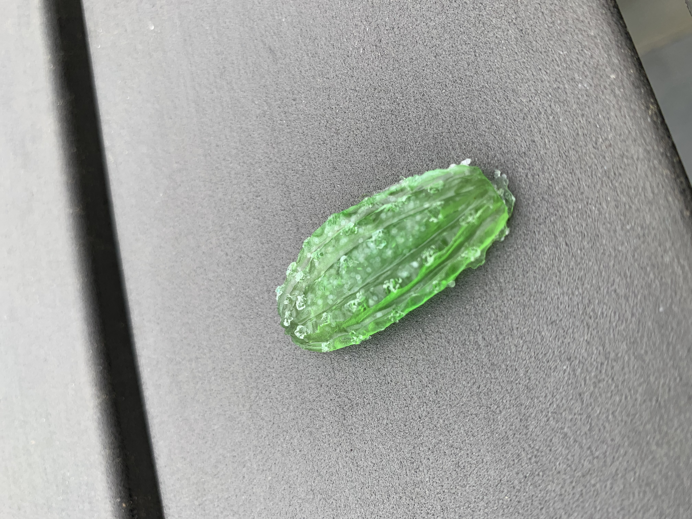
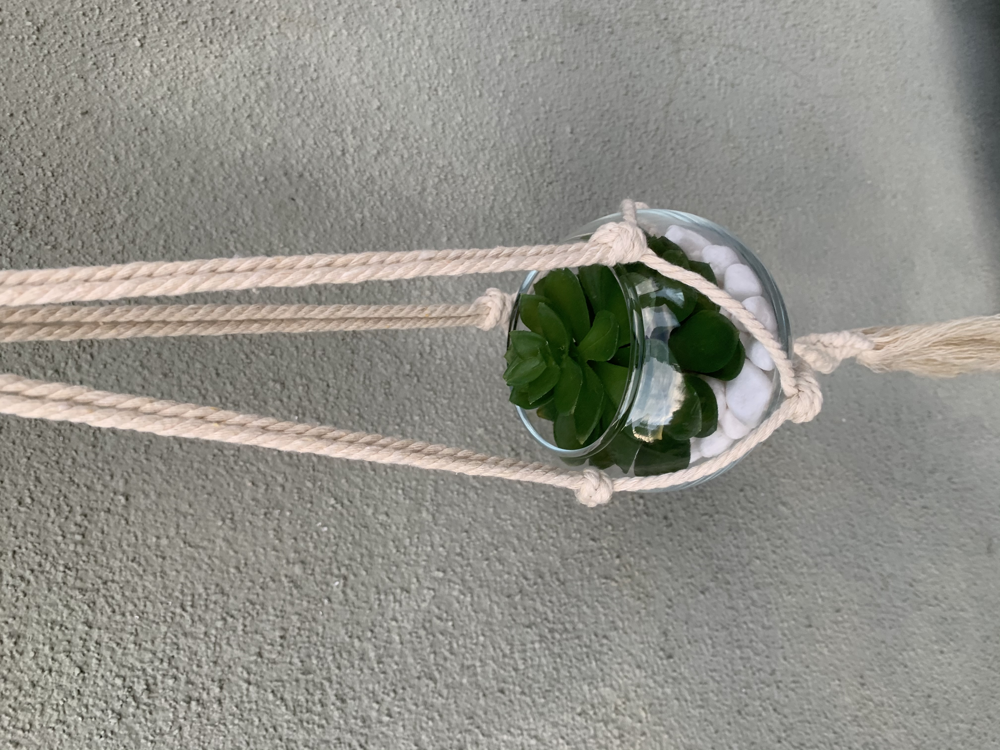

Hi! Our names are Avery, Kaenna and Leah, and we are Everything Succulents! At Everything Succulents, we make macrame terrariums and resin succulents! Our company started within the Entrepreneurial Class at our school, The Girl’s Middle School, where we design products and a company. We wanted our product to be something that could brighten up your day, amidst COVID-19. “What are we all doing right now?” we thought, “Stuck in our rooms of course!”. From there, we decided we wanted a product that could bring some sense of calm to you, amidst these crazy times. What better product than Terrariums and Resin Succulents! They give us all chill and relaxed vibes! We hope you will take a look into our company and products.
 